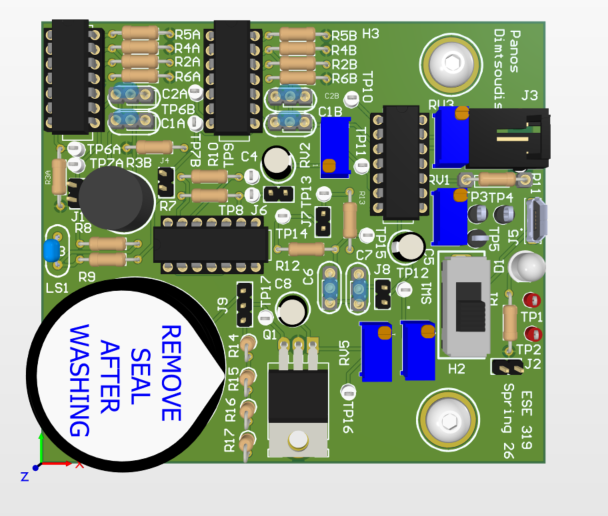

Undergraduate Research Assistant in Penn's Device Research and Engineering Laboratory.
Penn Electrical Engineering
Panagiotis Dimtsoudis
I am an electrical engineering student at Penn working on PCB design, embedded systems, signal conditioning, device characterization, and fabrication.
Most of my work connects design decisions to bench results through circuit builds, measurement data, firmware, reports, and hardware debugging.
At Penn / Currently
Current academic and technical work.
B.S.E. Electrical Engineering at the University of Pennsylvania, Class of 2028.
Compact PCB layout, embedded firmware, fabrication, and measurement-driven hardware development.
Selected Projects
Selected technical work.

AlScN Ferroelectric Junctions
Contributor work on temperature-dependent characterization and analysis of ultrathin all-nitride ferroelectric junctions.

Metal Detector PCB
Custom oscillator-based detector PCB taken through layout, fabrication, assembly, report writing, and bench testing.

Guitar Hero Synthesizer
ATmega328PB-based bare-metal C synthesizer with real-time PWM audio, controller inputs, and pitch-mapping controls.
Experience
Current work and recent roles.
May 2026 - Present
Undergraduate Research Assistant
Device Research and Engineering Laboratory, Penn Engineering
Collecting, organizing, and analyzing electrical characterization data for AlScN ferroelectric junctions across temperature.
Device Characterization
Python
Ferroelectrics
Jan 2025 - Present
Technology Support Specialist
University of Pennsylvania, Philadelphia, PA
Supporting students with hardware, software, ticketing, technical troubleshooting, documentation, and equipment loan operations.
Troubleshooting
Hardware Support
Documentation
Summer 2024
Computer Engineering Intern
AS Hellas, Thessaloniki, Greece
Updated control-panel documentation, supported OT/IT infrastructure, and developed C/Python utilities for commissioning checks and log analysis.
C
Python
Control Panels